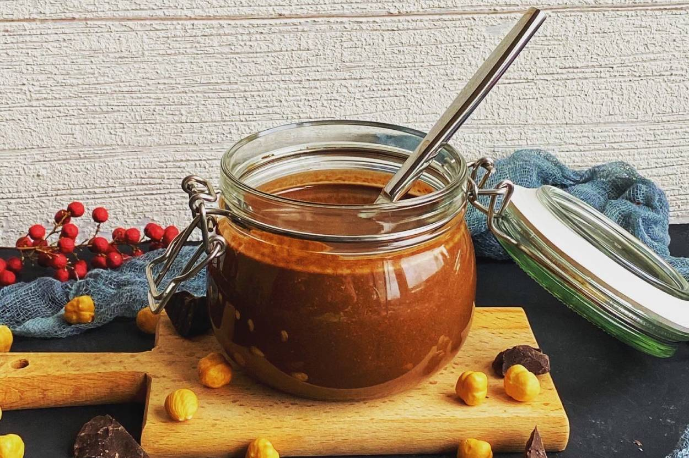
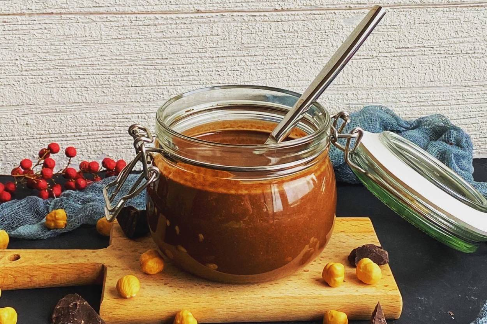

Kolay Pankek Tarifi...
Günümüzde tavaları, dökme aparatları, kalıpları vb. kolaylıkları ile uzun zamandır popülerliğini koruyan kolay ve lezzetli bir tarifle karşınızdayım. Kahvaltıda, çay saatlerinde, ansızın ziyarete gelen misariflere ne sunacağım dediğiniz anda ve varsa çocuklarınız sizden yiyecek bir şeyler istediklerinde imdadınıza yetişecek bu yiyecek genelde kahvaltılık çikolata, reçel ve marmelat gibi tatlılarla birlikte tüketilse de, isterseniz kahvaltılık sos, zeytin ezması, krem/labne peynir ve salam gibi ikililerle de tüketebilirsiniz. Gelelim malzemelerimize.


 
